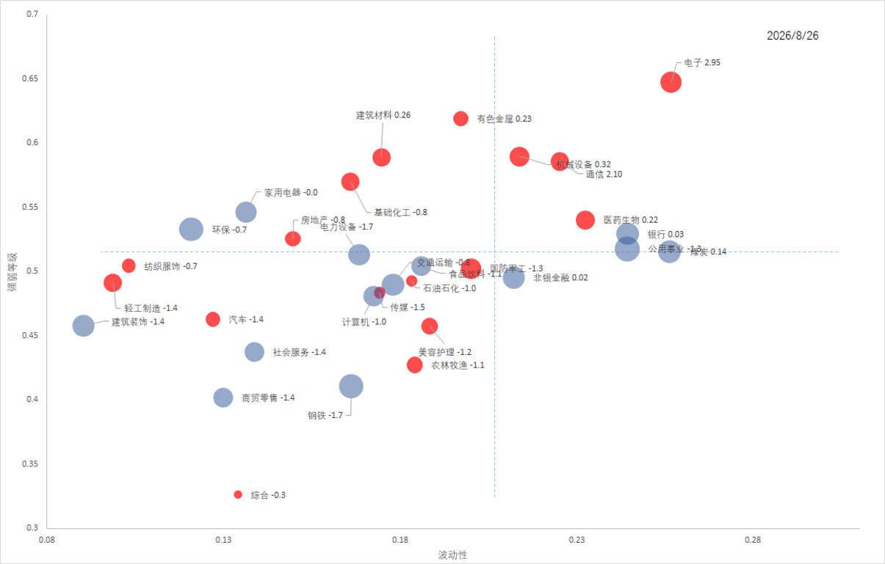

【260826】市场短期反弹是否进入尾声
短期反弹进入观察窗口。整体空间读数显示继续上行空间被压缩，而散户情绪在大幅回落后出现缓和迹象。下面两张图分别看全市场温度与行业分化。

读图说明：
- 整体空间看阴影部分，当前读数为 0.74。这意味着未来继续上行的空间为 1 − 0.74 = 0.26，上行空间正在被压缩。
- 散户情绪看虚线部分，当前读数为 0.17。情绪在经历大幅回落之后，出现缓和迹象，但仍处于偏低水平。

读图说明：
- 横轴为波动性，纵轴为强弱水平。越靠右上方，代表高波动且相对强势；越靠左下方，代表低波动且相对弱势。
- 右侧高波动区域以科技成长类行业为主，电子、通信等位于偏强位置。
- 中间区域分布着周期与消费类行业，有色金属、建筑材料、机械设备等彼此分化。
- 左下区域聚集着低波动弱势行业，钢铁、商贸零售、社会服务等距离中线较远，显示当前强度偏弱。
评论